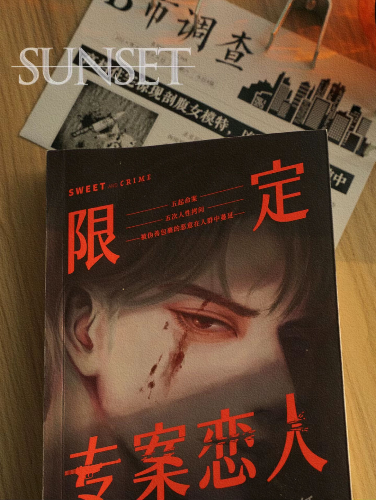
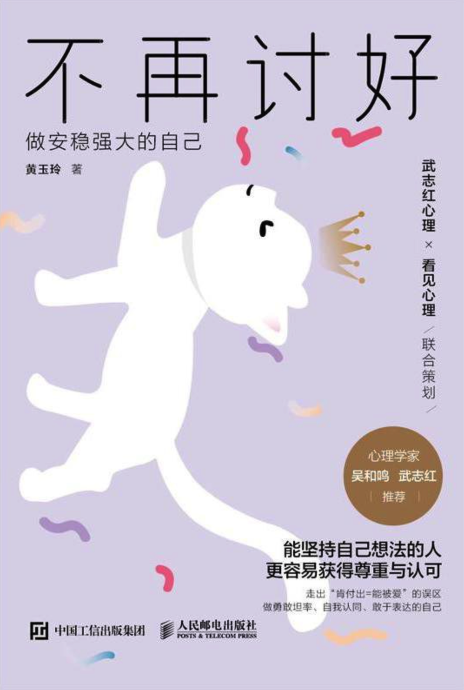

みなさん おはようございます
-
私の趣味
私はゴロゴロして寝るのが好きで、映画を見るのも好きな人間だ。映画に出ている人たちがセリフを言うのを見るたびに、変な人たちだなあと笑いたくなる。 明らかに自分のセリフを言っているのに、誰かが自分を演じているような気分になる。 映画を見ていると、悩みや悲しみを忘れさせてくれることがある。 その時は、映画を見ていることが夢のように感じられた。映画を観たくないときは、ただひとりになりたいときがある。ひとりでいるときは、することもないし、くだらないことを考えたくない。 一人でいるときは、ただゴロゴロして寝ていたいし、家事もしたい。 本当に不思議な人です。
-

好きな本
限定シリーズの恋人たち』はダンディ・ペーパーによる2023年の新作。サスペンス小説である本書は、事件解決のスリリングな過程と、二人の甘美な関係が描かれている。一刻も早く事件を解決するため、警視庁は5人限定の対策本部を設置した。事件が解決したことで、事件の真相や犯人の動機も悲しくなってくる。 タスクフォースは、別の衝撃的な人間の歯饅頭だけでなく、目玉ミルクティー事件の機会に解散しようとしている.... 本書の推理サスペンス路線と感情路線は、読者にもっと爽快感を与え、サスペンス路線と感情路線が一体となり、本書の友人のように、この良書をお見逃しなく〜！
-

武志红が心から推薦する。他人のために極端な責任を負わなければならないと妄想するのはやめなさい。 誰もが満足しなければならないと想像するのをやめなさい。自分が「悪者」にならないと考えるのはやめなさい。 自分を愛さずして、どうして他人を愛せるというのか？ 誰かを喜ばせる必要はない！他人を喜ばせることに人生のすべてを賭けることに慣れている人たちがいる。 彼らの頭の中には、いつもこんな声がある。 「私じゃない、私じゃない、私を責めないで」 「見捨てられさえしなければ、嫌われたりバカにされたりして何が悪い」 恋愛では、落ち着きたいのに、争いの前では、熱い鉄を裸足で踏むようなもので、根を下ろすことができず、落ち着かない。 これがプリーザーの性格である。 このような状況では、疲れ果てて苛立ちを感じるだけでなく、心から自分を認めてくれる人を引き寄せることも難しい。 一度、自分にこう言ってみてはどうだろう。
-
将来の夢
私の夢は、実現は難しいと思いますが、自由に歩ける人になることです。 でも、いろいろな国に行ってみたいけど、学校もあるし、お金もないし、1年に何カ所も行けないので、外に出て旅行できるチャンスがあったら、ぜひ行ってみたいと思っています。 でも、現状はお金も時間もない。 私の夢は大金持ちになって世界を旅することだ。 同時に、ドラえもんのように自由な扉を持って、時間やお金がなくても行きたいところに行けるようになりたい。 でも、いつかその夢は実現する。 その後、犬と猫を飼うつもりだ。 人は人生の楽しみを味わうために生きているんでしょう？ 人はそれぞれ違うけれど、それぞれの夢やライフスタイルがある。